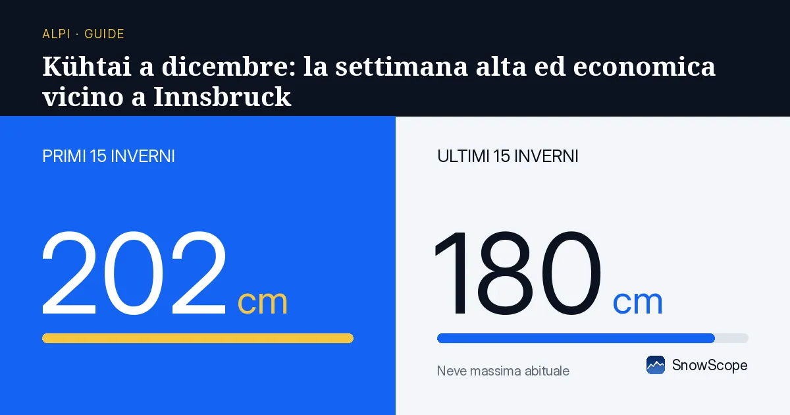

Kühtai a dicembre: la settimana alta ed economica vicino a Innsbruck
Kühtai si trova più in alto rispetto alle vette degli impianti di molte altre stazioni austriache, e questa altitudine ripaga a dicembre. La base a 1939 m mantiene la neve che i fondovalle più bassi perdono: in un tipico 15 dicembre il record SnowScope di 46 inverni registra 60 cm lì, con 72 cm a metà montagna e 112 cm in vetta. La stagione bassa prosegue fino al 18 dicembre con uno skipass di 6 giorni a EUR 269.
Le previsioni neve in tempo reale per Kühtai nell'app SnowScopeAltezza neve, allerte powder e mappa 3D, gratis.
L'altitudine come assicurazione
La profondità della neve aumenta salendo di quota. Kühtai lo dimostra chiaramente lungo i suoi 569 m di dislivello. In base (1939 m) un tipico metà dicembre registra 60 cm, a metà montagna (2223 m) 72 cm, e in vetta (2507 m) 112 cm. Questo divario ti offre opzioni quando le piste più basse si assottigliano.
Anche negli anni deboli, la montagna mantiene la neve. In 1 inverno su 10, il 15 dicembre arriva con soli 27 cm in base. Eppure in 46 inverni di dati storici, la base non è mai stata priva di neve in quella data. L'area mappata copre 34 km di piste e 13 impianti, e ogni pendio è in quota.


Quando prenotare prima di Natale
L'inizio di dicembre è la scommessa. In base, il 70 % degli inverni ha 30 cm o più nella prima settimana di dicembre, salendo all'85 % dall'8 al 14 dicembre. Nella terza settimana (15–21 dicembre) raggiunge il 93 %, e il 96 % nella settimana prima di Capodanno. Metà montagna è più sicura prima: già l'89 % nella prima settimana.
Il primo giorno tipico per trovare 30 cm in base è il 12 novembre. Per una prenotazione di dicembre, aspetta metà mese per spostare decisamente le probabilità a tuo favore, o accetta il rischio di neve scarsa se prenoti la settimana dal 27 novembre al 4 dicembre al prezzo di bassa stagione.
Cosa ci dicono gli ultimi 15 inverni
Kühtai si è riscaldata meno dei fondovalle più bassi delle Alpi. La media di dicembre in base è scesa leggermente da 53 cm nei primi 15 inverni a 49 cm negli ultimi 15 inverni. In vetta, si è mantenuta stabile attorno ai 103–104 cm. Il quadro della settimana di Natale è cambiato di più: il 100 % dei primi 15 inverni aveva 30 cm in base entro la settimana di Natale, ma solo l'87 % degli ultimi 15.
L'inverno scorso (2025-26) è stato magro: 36 cm in base il 15 dicembre. Qui, magro è ancora sciabile. La tendenza suggerisce che Kühtai rimane più affidabile rispetto alle stazioni più basse, ma nessun dicembre è garantito.
Il conto di bassa stagione
Prenota entro il 18 dicembre per bloccare il prezzo di bassa stagione. Uno skipass giornaliero costa EUR 50,50 e uno skipass di 6 giorni EUR 269. Dal 19 dicembre, i prezzi aumentano a EUR 66,50 al giorno e EUR 353 per 6 giorni. Il risparmio su uno skipass della durata di una settimana è di EUR 84.
Dal 4 dicembre in poi, ogni skipass di 2 giorni o più vale anche in tutta la regione Kühtai-Hochoetz, aggiungendo 90+ km di piste collegate senza costi aggiuntivi. Questo importa se il vento chiude il terreno più alto e aperto di Kühtai.
Kühtai contro Stubaier Gletscher
Lo Stubaier Gletscher, a 20 minuti di distanza vicino a Innsbruck, si trova più in alto in vetta (3208 m contro 2507 m) e mantiene più neve lì: 169 cm in un tipico 15 dicembre. La sua base è più bassa (1692 m) e più magra, con soli 40 cm e neve nel 72 % delle settimane di metà dicembre. I 60 cm di Kühtai in base sono più consistenti.
Un giorno di stagione principale allo Stubaier Gletscher costa EUR 75,50 e uno skipass di 6 giorni EUR 355. Per una settimana di dicembre prima del 19 dicembre, lo skipass di 6 giorni di Kühtai a EUR 269 è EUR 86 più economico. Scegli Stubaier se l'altitudine extra e la profondità del ghiacciaio ti attirano e non ti importa pagare di più. Scegli Kühtai per una neve di base migliore e una fattura più bassa.
Cosa portare e sapere
Kühtai è un villaggio di passo di montagna su una strada di montagna. Porta pneumatici invernali e catene da neve; la strada si chiude per il controllo delle valanghe dopo forti nevicate. Inserisci un giorno di margine nei tuoi piani se hai una data di checkout fissa.
L'area sciistica mappata è piccola e può essere sciata a fondo in due o tre giorni da uno sciatore intermedio. Utilizza il collegamento Hochoetz dal 4 dicembre in poi per esplorare nuovo terreno senza pagare extra.
Consigli per sciatori
- Prenota il tuo skipass di 6 giorni entro il 18 dicembre per pagare EUR 269 invece di EUR 353 dal 19 dicembre in poi.
- Punta alla settimana del 15–21 dicembre o successiva: il 93 % degli inverni aveva 30 cm in base entro allora, contro l'85 % della seconda settimana.
- Vai sulle piste più alte quando il vento si rinforza; l'area collegata Hochoetz (disponibile dal 4 dicembre) offre protezione sul suo terreno più dolce.
- Porta pneumatici invernali e catene; la strada per Kühtai si chiude per lavori di valanghe dopo le tempeste. Controlla avalanche.report prima di lasciare la pista.
- In un anno magro, scia a metà montagna e in vetta per primo—la base potrebbe aver bisogno di una giornata di neve fresca per coprire le rocce.
Su questi numeri
Le altezze neve delle località sono la neve più alta sui pendii superiori alla data indicata; sono stime per un'area, non una misura in un punto. Le previsioni possono cambiare. Leggi sempre il bollettino valanghe ufficiale prima del fuoripista.
Bollettini valanghe ufficiali: Avalanche.report – Euregio Tyrol
Cita questo articolo
Per ricerca, didattica o stampa: numeri e grafici sono liberamente riutilizzabili con licenza CC BY 4.0 citando così.
SnowScope (2026), Kühtai a dicembre: la settimana alta ed economica vicino a Innsbruck, https://snowscope.app/blog/it/2026/11/kuehtai-december-ski-trip-highest-village-innsbruck-budget.html, consultato il 2026-11-14
SnowScope (Atlas Labs). (2026, November 14). Kühtai a dicembre: la settimana alta ed economica vicino a Innsbruck. SnowScope snow reports. https://snowscope.app/blog/it/2026/11/kuehtai-december-ski-trip-highest-village-innsbruck-budget.html
BibTeX
@misc{snowscope2026kuehtaidecemberskitriphi,
author = {{SnowScope (Atlas Labs)}},
title = {Kühtai a dicembre: la settimana alta ed economica vicino a Innsbruck},
year = {2026},
month = nov,
howpublished = {\url{https://snowscope.app/blog/it/2026/11/kuehtai-december-ski-trip-highest-village-innsbruck-budget.html}},
note = {Published 2026-11-14 13:29 UTC; accessed 2026-11-14}
}· CC BY 4.0 · Metodi, dati e strumenti →
Kühtai: neve e temperatura per quota, quest'inverno vs lo scorso (strumenti) →
Segui Kühtai
Gratis: un messaggio quando arriva la neve e il meteo ogni mattina.